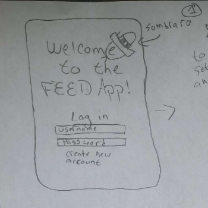

Problem Statement: Finding somewhere to eat
Too much time is wasted looking for places to eat, especially when it is a mutual decision. The wasted time can lead to irritability and an increase of negative emotions on top of the fact that this is usually accompanied by hunger.
Affinity Diagram: Finding somewhere to eat
My group and I worked together to generate different ideas related to our app. We created several categories related to what our app should do and created an affinity diagram that has a collection of post-it notes with our ideas. Some of the ideas we explored were how we could make this app more accessible to users, how we could implement locational data, and how we could utilize data storage for each particular user.
Personas: Finding somewhere to eat
My group and I generated some profiles for potential users who would be interested with our application. We worked together to generate some ordinary and some not so ordinary personas in order to show our audience who this application would potentially cater to.
Storyboard: Finding somewhere to eat
My group and I utilized the personas we created for a previous assignment and generated potential situations where they would have interacted with our application. Essentially, we highlighted how the features of our application can help make an individual's life easier, more manageable, and/or better in general.
Sketches: Finding somewhere to eat
My group and I began working on potential ideas for what our application should look like; we began, individually, sketching out how we each wanted to website to look like. Many of our ideas were incorporated into everyone's sketches while some are found in either one, two, or three of our group member's sketches.
Paper Prototype: Finding somewhere to eat

My group and I created a first-draft of our application as a paper prototype. We created a series of sketches that went through some of the different pages in our application and we described some of the potential functionalities of the application itself. At the first stage of this prototype, we created a video that shows us navigating through the application and utilizing some of these potential functionalities.